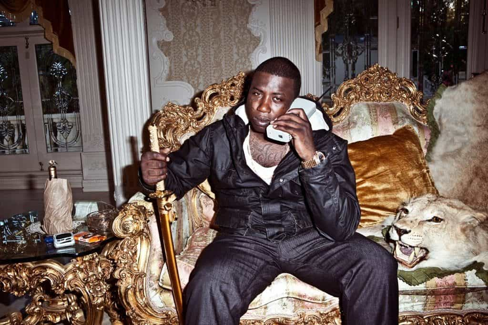
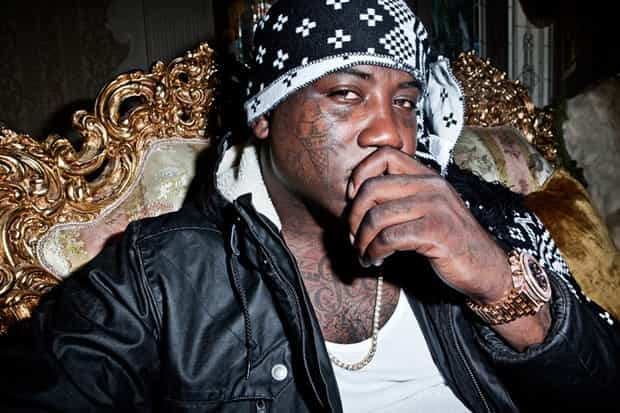
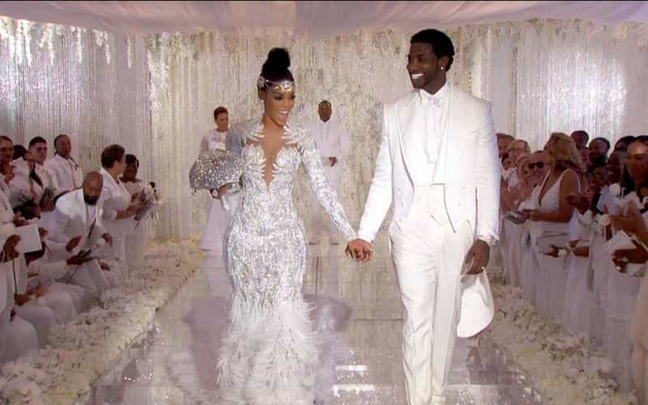

Alfonso Taft is a surfer stoner All-American Aryan alpha male quarterback. Raised in the Northeast, he speaks with a Southern twang for no apparent reason. Host of America's #1 Chadcast.


What can ROK readers learn from the masculine principles of the notorious rapper Gucci Mane? For starters, Gucci Mane is a textbook alpha male, violent, high status, and charismatic. Rather than dwell on the degeneracy that is hip-hop culture, a proactive approach is to study the ridiculous plights of alpha male psychopaths like Radric Davis, aka Gucci Mane.
During a heated feud with rival Atlanta rapper Young Jeezy, Gucci Mane was set up by a female “friend,” otherwise known as a thot. Under the impression he and the thot would “hang out,” he accompanied the thot to her apartment on the night of May 10, 2005. While inside, five masked men stormed in with weapons and brass knuckles. After hitting Gucci with brass knuckles and threatening to kill him, the assailants tied up and pistol whipped Gucci’s friend.
Outnumbered, Gucci put up a fight and somehow, someway, got a hold of a weapon. In a scuffle, shots went off and the assailants scurried out, wounded, bleeding. Three days later, the body of Henry Lee Clark III was found near a local Atlanta middle school.

On May 19, 2005 Gucci Mane turned himself into DeKalb County police on murder charges. Gucci Mane admitted to shooting at the masked men but maintained he acted in self-defense. Gucci posted $100,000 bond only to later return to jail months later due to a prior assault charge. In the Winter of 2006, the murder charges against Radric “Gucci Mane” Davis were dropped.
“There wasn’t enough evidence to meet the elements of murder,” said Gucci’s Lawyer, Dennis Scheib, “Based on what he said and some other information, it came out that it was a self-defense situation. It was going to be either a robbery, an aggravated assault or a murder.”
Gucci’s will to survive in a fight or flight, life or death situation is a testament to his primal instinct. His respect also would’ve be in question if his ice cream cone chain was snatched by his rivals.
In the hip-hop world, it’s a great embarrassment to have your chain snatched. The robbing of chains is meant to emasculate the former chain wearer and dethrone him of his bright and shiny status symbol. If his chain had been taken from him, Gucci was sure to face taunts on social media and a decrease in status. The chain as a status symbol can make you a target. Gucci Mane showed that he was literally down to die for his chain.
How did Gucci react after murder charges were dropped? He bodaciously bragged about his killing and profited from it, literally making a killing. Gucci rapped about the legal murder in a song called “truth” where he taunted his rival Young Jeezy:
“Go dig your partner up nigga, bet he can’t say shit,” Gucci raps. The song also features audio of television reporters talking about the slaying. Clearly, Gucci has a killer instinct for self-promotion.
In a hip-hop fiefdom reminiscent of the wild west, or war-torn Africa, a rapper killing a guy and getting away with it is the equivalent of winning the lottery.
In November 2010, police spotted Gucci Mane driving recklessly in his white Hummer. When they caught up to him, police witnessed Gucci punch a man he was arguing with. After ignoring police, Gucci was pepper sprayed and booked on a slew of charges including “damage to government property, obstruction” and “driving on the wrong side of the road.” In court, many of the charges were dropped and a plea of mental incompetence was filed on Gucci’s behalf.
A ruthless and psychotic alpha male, The East Atlanta Santa was arrested in January of 2011 for kicking a woman out of his moving car. After Gucci plead guilty to two counts of battery, reckless conduct, disorderly conduct, the woman later sued Gucci Mane and won a reported $57,161.
In January 2011, The Superior Court of Georgia’s Fulton County ordered Gucci Mane to a psychiatric hospital due to the mental incompetence filing. The judge ordered that Gucci be transported to a “111-bed psychiatric and chemical dependency treatment facility,” where he would “undergo tests to determine mental health.” Shortly after Gucci was released from the Georgia mental institution, he tattooed an ice cream cone on his face.

For many, his facial tattoos are considered degenerate, but to others they are a high ranking symbol. Gucci’s gold teeth could be interpreted by many as “thug” and low-status, but to others Gucci’s gold teeth are a symbol of hierarchy and a commitment to a criminal lifestyle.
Who ranks higher in the criminal underworld hierarchy: the man with no tattoos or gang affiliation or a man with face tattoos, gold teeth, and a reputation for killing his rivals? For most of us who live outside the criminal hierarchy, his facial tattoos and gold teeth say “don’t fuck with me, I’m crazy.” A violent and unpredictable drug addict, Gucci Mane has been arrested for assault four times.
For ROK readers, it’s important to take note of the fact even dangerous alpha males like Gucci can be tricked by thots into getting set up for a robbery or potentially killed. Trickster thots can be dangerous at minimum, to any man.
Gucci has been on the brink of death but in December 2013, he was on the brink of a lifetime of incarceration. In December 2013, Gucci was “charged in federal court with two counts of possessing firearm as a felon.” Gucci was facing a maximum of 20 years in prison if convicted. He later agreed to a plea deal and served three years.
Released in May of 2016, Gucci emerged from his incarceration a changed man. He’s now completely sober and living a crime free life. Gucci got married in the Fall of 2017.

Few men are rich. Few men who go to jail remain rich. Few men kill a guy, go to jail, and remain rich afterward. There is only one man who did it, Gucci Mane. He somehow managed to pull it off.
Read More: Why Does Jay Z Still GET A Celebrity Pass Compared to Chris Brown?